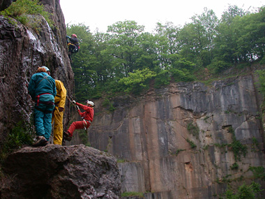

Klim en klauter
maandag 7 juni 2004 | Reisverhalen
Sinds gisteren terug van een weekendje klimmen en klauteren, boven en onder de begane grond. Bij deze ook een officieel teken van leven.

maandag 7 juni 2004 | Reisverhalen
Sinds gisteren terug van een weekendje klimmen en klauteren, boven en onder de begane grond. Bij deze ook een officieel teken van leven.

Pas op 9 juni 2004
Prachtige foto's. Ben er zelf ook al geweest maar 't Is al heel lang geleden hoor. Het is nog niet veranderd in Villers-le-Gambom